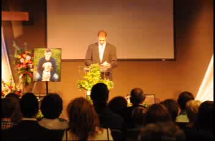

Memorial Services
A special thank you to Ashton's uncle Chad for presiding over the services. Thank you to Dan Stisser and his Exit 505 band for providing the music.

A special thank you to Ashton's uncle Chad for presiding over the services. Thank you to Dan Stisser and his Exit 505 band for providing the music.